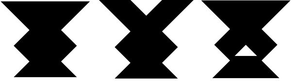
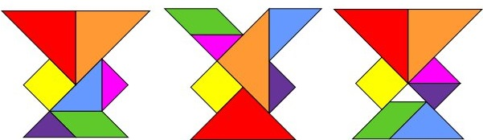

Now move over to the Puzzles Station, marked on the map with a C. In this portion of the initiative you will be exposed to challenges of both the inductive and deductive variety. Puzzles come in many shapes and forms but abstractly they are well constructed problems with correct and often nice solutions. These puzzles are agnostic to your choice of self-identification and this is purely to evaluate your problem-solving abilities. You may have fun but are not required to.
[Warmup] Simple Tetrahedron – Make a tetrahedron from these two identical pieces.
Puzzle descriptions
[Tiling] Tangrams – Make the following shapes from the 7 pieces.

Solution:

[Patterns] Tower of Hanoi – Objective: Move an entire stack to another rod. Rules: Only one disk can be moved at a time, disks can only be moved from the top of one stack to the top of another, no disk can be placed on top of a smaller disk
[Construction] Shooting Star – Use the 6 identical pieces to create a shooting star as shown.
[Picture] Fine Art Puzzle Blox – Recreate any of the paintings as shown from the 6 sided cubes
[Lock] Secret Box – Try to unlock the box by any means necessary (jokes be gentle pls)
[Word] Code Cryptex – Figure out the clues to find the 5 letter combination
Please ask for help/hints as needed, though these are inevitably more enjoyable when done organically.